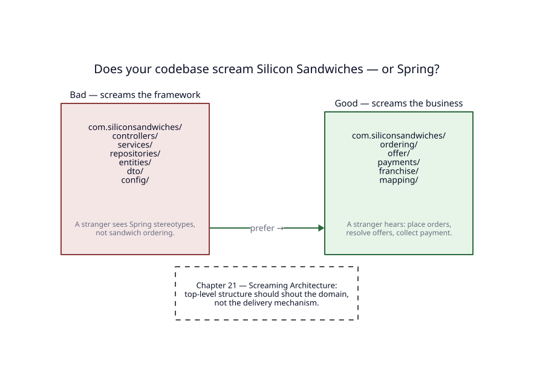
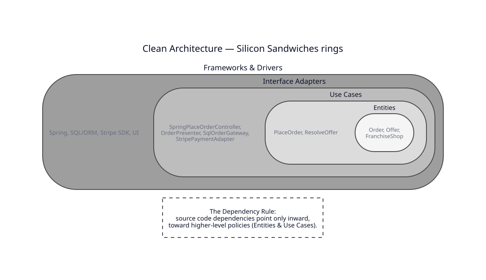
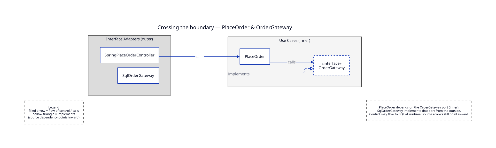
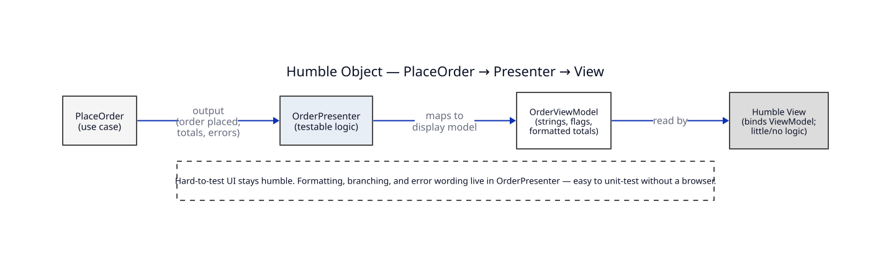
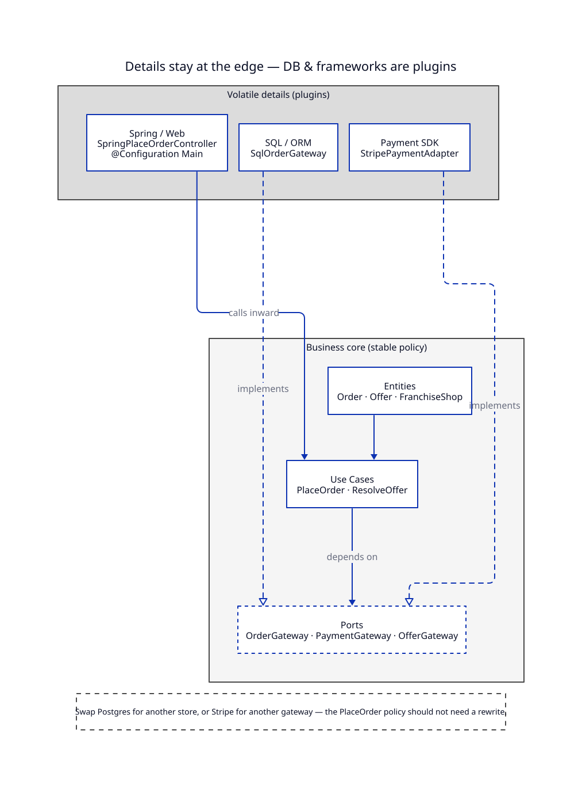
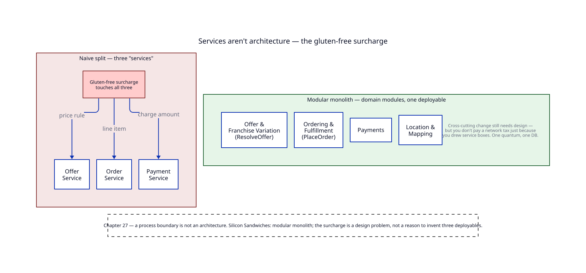
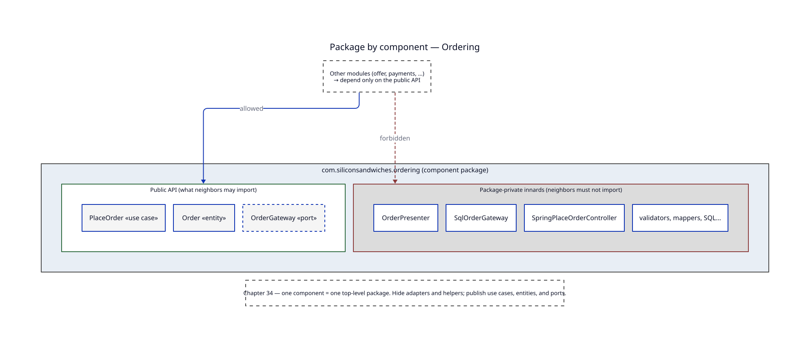

1. Open the project — what does it scream?
Junior, pretend you just cloned Silicon Sandwiches. You have never heard of the company. You open the top-level packages. What do you see?
If you see controllers, services, repositories,
the codebase screams Spring. That is the delivery mechanism talking.
The business — franchise sandwich ordering — is whispering underneath the stereotypes.
Screaming Architecture means the structure shouts the domain on day one. A stranger should hear ordering, offer, payments, franchise before they hear “MVC.”

2. Business rules come first
Before frameworks, before SQL, before JSON: the business. In Silicon Sandwiches, the critical path is Place Order against a resolved offer for a franchise shop.
Think in three layers of “truth,” from most stable to most application-specific:
-
Entities — enterprise rules that would still matter if you rewrote the app tomorrow:
Order,Offer,FranchiseShop. An order has line items and a total; an offer carries menu and prices for a shop/day; a franchise shop has delivery toggles and locale facts. -
Use cases — application-specific business rules:
PlaceOrdervalidates a customer’s sandwich order against today’s offer and records pickup or delivery;ResolveOfferoverlays local deltas on the national baseline. - Request / response models — plain data crossing the use-case boundary (what Uncle Bob often calls input/output data structures). They are not your JPA entities and not your HTTP DTOs glued to Spring annotations.
If PlaceOrder imports a Spring annotation or a JDBC type, you have already lost.
The use case should speak only in domain and port language.
3. The rings and the Dependency Rule
Draw four concentric circles. Entities in the center. Use cases around them. Interface adapters next. Frameworks and drivers on the outside. Source code dependencies point only inward — toward higher-level policy.
Policy and level, in plain English: a policy is a rule that tells the system what to do; its level is how central that rule is to the business. Entities sit at a higher level than use cases; use cases sit higher than Spring controllers and SQL adapters. Lower-level details plug into higher-level policies — never the other way around.

Crossing a boundary uses Dependency Inversion (DIP).
PlaceOrder depends on an OrderGateway port that lives with the use cases.
SqlOrderGateway implements that port from the outside.
At runtime control may flow toward SQL; in the source tree, arrows still point inward.

Crossing with data: pass simple DTOs / data structures across the boundary — not your ORM rows, not your framework request objects. Controllers translate HTTP into use-case input; presenters translate use-case output into something the UI can bind.
4. Humble Objects — Presenters and Gateways
Some objects are hard to test: browsers, Swing views, JDBC drivers, Stripe’s SDK. The Humble Object pattern says: keep those thin. Put the interesting branching and formatting next door, where unit tests can reach it without a browser or a database.
For Place Order, OrderPresenter takes use-case output and builds an OrderViewModel
— formatted totals, error messages, flags for “delivery available.”
The view binds the ViewModel and stays humble.

Gateways work the same way from the other side.
OrderGateway is the port; SqlOrderGateway is the humble (or at least isolated) adapter
that knows SQL. Swap the adapter; keep the use case.
5. Boundaries multiply — and you do not need every one on day one
Clean Architecture is not “four rings and stop.” As Silicon Sandwiches grows, you may split streams: a web UI path, a staff tablet path, a batch job that reprints kitchen tickets, a future extraction of the offer-read cache. Each stream can be its own boundary crossing with its own adapters.
The mistake is pretending every boundary must exist on Monday.
Start with the boundaries that protect the revenue path —
PlaceOrder against SQL and against the payment provider —
and add rings where change pressure appears.
6. Main is the dirty little secret
Someone has to create the concrete objects and plug them together.
That someone is Main — in our story, a Spring @Configuration composition root.
Main is allowed to know everything. The rest of the system is not.
@Configuration
class SiliconSandwichesConfig {
@Bean
OrderGateway orderGateway(DataSource ds) {
return new SqlOrderGateway(ds);
}
@Bean
PaymentGateway paymentGateway(StripeClient stripe) {
return new StripePaymentAdapter(stripe);
}
@Bean
PlaceOrder placeOrder(OrderGateway orders,
PaymentGateway payments,
OfferGateway offers) {
return new PlaceOrder(orders, payments, offers);
}
@Bean
OrderPresenter orderPresenter() {
return new OrderPresenter();
}
}
Notice the direction: Main wires adapters into ports.
PlaceOrder never constructs SqlOrderGateway itself.
7. The database and the framework are details
The database is a detail. The web framework is a detail. Both belong at the edge of the system, plugged into ports the business owns.
Silicon Sandwiches runs as a modular monolith on one relational database —
that is an architecture decision, not a license for PlaceOrder to import Hibernate.
SQL lives in SqlOrderGateway. Stripe’s SDK lives in StripePaymentAdapter.
Spring MVC lives in SpringPlaceOrderController.

Why bother? Because details change on a different schedule than sandwich rules.
You may swap ORMs, upgrade Spring, or replace the payment provider.
If those names have leaked into PlaceOrder, every swap becomes a rewrite of the business.
8. Services are not an architecture
Drawing three boxes labeled Offer Service, Order Service, and Payment Service does not give you Clean Architecture. It gives you a network bill and a distributed debugging hobby.
Uncle Bob’s “Kitty” lesson translates cleanly here. Corporate adds a gluten-free surcharge. That rule touches offer pricing, the order line item, and the payment charge amount. If you naively split three deployables, the surcharge becomes a cross-service change with three releases and a coordination meeting.
Silicon Sandwiches chose a modular monolith for a reason: one quantum, one relational DB, domain modules (Offer & Franchise Variation, Ordering & Fulfillment, Payments, Location & Mapping). The surcharge is still a design problem — but you do not invent three services just to feel modern.

9. The test boundary
Tests are a first-class client of your architecture. The valuable tests sit against use cases and presenters, using fake gateways — not against Spring’s full context for every assertion.
@Test
void placesOrderAgainstResolvedOffer() {
var orders = new InMemoryOrderGateway();
var payments = new FakePaymentGateway();
var offers = new StubOfferGateway(Offer.sampleShopDay());
var placeOrder = new PlaceOrder(orders, payments, offers);
var result = placeOrder.execute(PlaceOrderRequest.turkeyClub());
assertTrue(result.isOk());
assertEquals(1, orders.saved().size());
}Fragile tests that bind to UI widgets or SQL schemas punish you every time a detail moves. Stable tests bind to the policies: “given this offer, PlaceOrder accepts and charges the right amount.” That is the test boundary — a client that respects the same Dependency Rule as production adapters.
10. Package by component — the payoff
Screaming folders were the trailer. Packaging is the feature film.
Package by component: one top-level package per deployable-shaped chunk of the business —
here, ordering, offer, payments, and friends.
Inside ordering, publish a small public API: PlaceOrder, Order, OrderGateway.
Keep SqlOrderGateway, SpringPlaceOrderController, OrderPresenter,
and the SQL mappers package-private (or otherwise sealed from neighbors).
Other modules depend on the API — not on the innards.

This is how screaming architecture survives contact with a real team: the package names shout the domain, and the visibility rules keep the Dependency Rule honest.
11. Monday morning checklist
- Open the top-level packages. Do they scream Silicon Sandwiches or Spring?
- Find
PlaceOrder. Does it import SQL, Stripe, or Spring Web? - Trace
OrderGateway: is the port owned by the use-case side, withSqlOrderGatewayoutside? - Is there an
OrderPresenter(or equivalent) keeping the view humble? - Is Main /
@Configurationthe only place that news up concrete adapters? - Would a gluten-free surcharge force three deployables — or one designed change inside the monolith?
- Can you unit-test
PlaceOrderwith fake gateways and no Spring context? - Is each domain module a package with a narrow public API?
If you can check those boxes, you are not “using Clean Architecture” as a slogan. You are keeping the sandwich business in charge of its own source code.
* Embedded systems (ch. 29) get a mention only: the same Dependency Rule applies when the “UI” is a device and the “database” is flash — but Silicon Sandwiches is a franchise web/modular-monolith story, so we leave the firmware digression there.